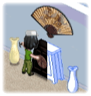

14 |
Basisbeginselen van bouwfase |
 |

Meubilair bouwen
Leid een arbeider naar een item om meubilair te bouwen.
Zo leid je een arbeider naar een item: 
Richt met de Wii-afstandsbediening op een arbeider en houdt de A-knop ingedrukt.
De arbeider wordt nu opgepakt en kan door de kamer worden verplaatst.
Laat de A-knop los om de arbeider op meubilair neer te zetten dat nog niet af is.
Als je arbeiders aan meubilair laat werken dat door dezelfde kleur wordt omrand, worden ze minder snel moe en raken ze minder snel gewond.
Kalender
Terwijl het team bouwt en de tijd verstrijkt, neemt het aantal dagen op de kalender automatisch af tot alle dagen voorbij zijn.
Als de tijd op de kalender om is voordat het team klaar is met het bouwen van de kamer, begint de bouwfase opnieuw.
Arbeiders sneller laten bouwen
Je kunt een arbeider met een bouwtaak helpen door de Wii-afstandsbediening op een arbeider te richten en op de B-knop te drukken. Zo kun je bekijken welk gereedschap ze op dat moment gebruiken.
Doe terwijl je de B-knop ingedrukt houdt met de Wii-afstandsbediening de in de gereedschapskist getoonde beweging na.
Hierdoor bouwt de arbeider het item sneller.
Let goed op of er een arbeider is die hulp nodig heeft. Arbeiders die hulp nodig hebben, stoppen met werken en gaan niet verder met werken tot je ze helpt. |
 Soms wordt meubilair door de kleur van een bepaalde arbeider omrand. Als dit het geval is, selecteer je de arbeider met dezelfde kleur en laat je ze aan dat item werken.
Soms wordt meubilair door de kleur van een bepaalde arbeider omrand. Als dit het geval is, selecteer je de arbeider met dezelfde kleur en laat je ze aan dat item werken. Als je de opdracht op tijd af wilt krijgen, moet je een handje helpen!
Als je de opdracht op tijd af wilt krijgen, moet je een handje helpen! |
 |
 |